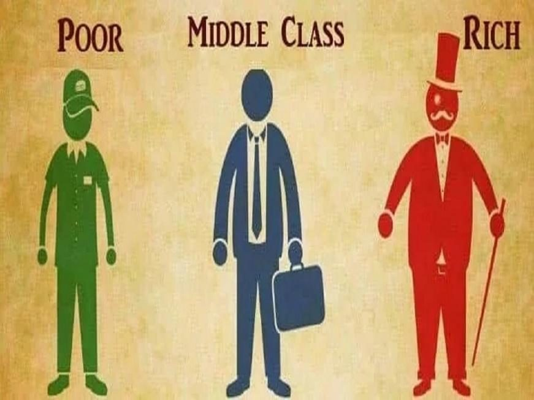

Social Stratification and MobilityHigh priority
Compare theorists in a table, then bring the Indian example: caste as closed system, Dalit woman for intersectionality, poverty and exclusion in rural India.
Chapter map#
- Social stratification
Theories
- Davis-Moore
- Tumin
- Marx
- Weber
Race and ethnicity
- Racism
- Ethnicity
- Intersectionality
Mobility
- Open and closed
- Vertical, horizontal
- Sorokin
Equality
- Opportunity vs outcome
- Rousseau
Deprivation
- Absolute
- Relative
New middle class
- Bell
- Lipset
Poverty and exclusion
- Lewis, Liebow
- Sen
- Putnam
- Affirmative action
Exam lens#
The story first#
In simple words#
- Stratification = unequal ranking by power, prestige and property.
- Functionalists (Davis-Moore): inequality is necessary; Tumin: it blocks talent; Marx: class conflict; Weber: class, status, party.
- Mobility can be vertical or horizontal; open systems allow it, closed (caste) restrict it, but no society is fully open or closed.
- Poverty is explained by subculture, situational constraints, capability and social capital; social exclusion goes beyond income.
| Term | In plain words |
|---|---|
| Stratification | Unequal ranking of individuals or groups by power, prestige and property. |
| Life chances | Weber: opportunities to reach valued resources, set mainly by market situation. |
| Status group | Weber: community defined by honour, prestige and lifestyle. |
| Social closure | Status groups restricting membership and access to privileges. |
| Intersectionality | Crenshaw: race, gender, class, caste and other identities interlock. |
| Primordialism | Geertz: ethnic ties are deep-rooted and innate. |
| Instrumentalism | Barth: ethnicity is situational and strategic. |
| Vertical mobility | Moving up or down the hierarchy. |
| Deferred gratification | New middle class habit of postponing pleasure for long-term gain. |
| Social exclusion | Denial of full participation in social, cultural, economic and political life. |
1 · Social Stratification#


- Social stratification refers to a system in which individuals or groups are ranked unequally based on access to power, prestige, and property.
- Members of a particular stratum often share common interests, lifestyles, and a sense of identity.
- Melvin Tumin defines social stratification as the arrangement of social positions into a hierarchy based on unequal access to resources like power, wealth, prestige, and psychological satisfaction.
- Throughout history, thinkers and philosophers have dreamt of an egalitarian society, yet stratification has persisted universally across time and space, making equality a moral aspiration rather than a sociological reality.
- Sorokin argues that an unstratified society is a myth - inequality exists in all societies.
- All societies have class differences
2 · Functional Theory of Social Stratification#
- The functional theory of social stratification, most systematically articulated by Kingsley Davis and Wilbert Moore in their essaySome Principles of Stratification, views social inequality as a universal, inevitable, and beneficial feature of all societies.
- According to them, stratification is a functional necessity and an unconscious device through which societies ensure effective role allocation and performance.
- By differentially rewarding positions, stratification motivates individuals to occupy and perform roles that are crucial for the survival and continuity of the social system.
- Social Stratification serves vital social functions, as follows:
- Role allocation: Every society faces the problem of ensuring that all necessary roles are filled.
- Stratification helps distribute individuals across different social positions by attaching varying degrees of rewards to them.
- Merit-based selection: More important and functionally critical roles should be occupied by the most capable and qualified individuals.
- Stratification facilitates the selection of talent by encouraging competition and differentiation.
- Training and motivation: Certain positions require prolonged training, skill acquisition, and sacrifice.
- To induce individuals to undergo such preparation, these roles must offer higher rewards in terms of income, prestige, and privileges.
- Performance incentive: Differential rewards act as incentives that motivate individuals not only to strive for higher positions but also to perform their roles efficiently and responsibly once they occupy them.
- Stability and integration: By ensuring that essential roles are performed and accepted as legitimate, stratification contributes to social order and stability.
- When rewards are seen as linked to merit, inequality is justified, reducing conflict and integrating individuals into the social system.
- In sum, Davis and Moore argue that social stratification is a necessary mechanism for maintaining social order, stability, and continuity.
- By linking differential rewards to functional importance and performance, stratification ensures effective role allocation and motivates individuals to contribute to societal needs.
- From this perspective, inequality is not a social problem but a functional prerequisite for the smooth functioning and integration of complex societies.
3 · Critique of Davis and Moore’s Theory#
- Melvin Tumin offered one of the most influential critiques of Davis and Moore’s functional theory of social stratification.
- Writing from a critical functionalist perspective, Tumin questioned the assumption that social inequality is both necessary and beneficial for society.
- He argued that the theory overstates the positive functions of stratification while ignoring its dysfunctional consequences, especially the ways in which inequality restricts opportunity, distorts merit, and undermines social integration.
- His critique shifts attention from the functionsof inequality to itssocial costs.
- There is no objective way to compare the relative importance of social roles.
- Overestimation of training as sacrifice: Training often brings its own rewards - less pressure, more leisure - and shouldn’t always justify lifelong high rewards.
- Stratification blocks talent: People from lower strata may lack access to opportunities, hence the most competent may never get selected.
- Demotivating for lower strata: Persistent exclusion and unequal access reduce commitment, generate resentment, and weaken integration.
- Disintegrative: Contrary to functionalist claims, stratification weakens social cohesion, breeds mistrust, and hampers value consensus.
- Tumin’s critique exposes the weaknesses of Davis and Moore’s argument by showing that stratification often blocks talent, reinforces privilege, and generates conflict rather than efficiency and integration.
- By highlighting the dysfunctions of inequality, Tumin demonstrates that social stratification cannot be justified solely on functional grounds, thereby laying the foundation for more conflict-oriented and critical approaches to the study of inequality.
4 · Marxist theory of stratification#
- Karl Marx argued that social stratification arises from unequal ownership of the means of production.
- Society is divided into two antagonistic classes.
- In capitalism, the main classes are the bourgeoisie, who own the means of production, and the proletariat, who sell their labour power.
- The bourgeoisie exploit workers by appropriating surplus value created by labour.
- This exploitation produces class conflict, which acts as the driving force of historical change.
- Marx believed that capitalist society would eventually witness increasing class polarization culminating in proletarian revolution and the establishment of a classless communist society.
5 · Max Weber’s Theory of Social Stratification#
- Weber’s theory of stratification offers a multidimensional understanding of social inequality, based on class, status, and party.
- He emphasized that social position is determined not just by economic factors but also by prestige and power relations within society.
- Weber’s theory of stratification stands in stark contrast to the theory of Karl Marx.
- While Marx explained stratification primarily in terms of economic class and control over the means of production, Weber’s was a multidimensional view of stratification.
- Weber defined class not as a group with shared ownership or lack of ownership of means of production (as Marx did), but rather as a group of individuals who share a similar market situation, especially in terms of life chances.
- He differentiated among four primary classes in industrial society: propertied upper class, white-collar workers, petty bourgeoisie, and manual working class.
| Karl Marx | Max Weber |
|---|---|
| Society is divided into two main classes: bourgeoisie and proletariat. | Identifies four major classes: propertied class, white-collar workers, petty bourgeoisie, and manual labourers. |
| Karl Marx | Max Weber |
|---|---|
| Class is defined by one’s relationship to the means of production. | Class is based on market situation - similar life chances and access to goods and income. |
| Predicts class polarization: the petty bourgeoisie will sink into the proletariat. | Predicts middle-class expansion: petty bourgeoisie will merge into white-collar workers, not proletariat. |
| Proletariat Revolution is inevitable due to exploitation. | Revolution is only one possibility; discontent may also find other expressions. |
| Focuses on class-based inequality. | Adds status groups (based on prestige) and parties (based on power) as additional bases of stratification. |
| Political power arises from economic power. | Power is dispersed among multiple parties, which can be based on class, status, or cut across both. |
6 · Weber’s trinitarian model#
- Max Weber’s theory of social stratification is often described as a trinitarian model, comprising class, status, and party as distinct yet interrelated sources of social power and inequality.
- In contrast to Karl Marx’s economic determinism, Weber emphasized that the stratification of society is multidimensional, shaped not only by economic factors but also by social prestige and political power.
- Class, in Weber’s framework, refers to people who share a similar market situation, particularly in terms of their economic opportunities in the marketplace.
- It is rooted in the control over economic resources and access to goods and income.
- For Weber, classes are not communities but economic groupings defined by their relation to the market, rather than ownership or non-ownership of the means of production.
- Class affects one’s life chances - the likelihood that individuals can access valued resources such as wealth, education, or healthcare.
- For example, those in the property-owning class have different life chances than manual laborers due to differences in wealth, skill levels, and marketable services.
- Status groups, on the other hand, are defined by social honour, prestige, and lifestyle.
- Status is not necessarily tied to economic wealth; a poor priest may command more social honour than a wealthy merchant.
- Status groups are typically communities, in the sense that they are bounded by shared cultural practices, values, and lifestyles.
- They exercise social closure by restricting membership and controlling access to certain privileges or symbols of prestige.
- The concept of status situation captures the non-economic dimension of stratification, where individuals are ranked based on perceived social worth, traditions, or communal values, often expressed through consumption patterns, dress, speech, and manners.
| Life Chances | Lifestyle |
|---|---|
| Opportunities available to individuals | Pattern of living adopted by individuals |
| Mainly determined by market situation | Mainly determined by status and culture |
| Includes education, income, occupation | Includes dress, food, language, consumption |
| Life Chances | Lifestyle |
|---|---|
| Concept associated with Weber's class | Concept associated with Weber's status groups |
- Finally, Weber saw party as the domain of power in the political sphere.
- Parties are organized groups that seek to influence power structures and decision-making within the polity.
- They may represent class or status groups, or cut across them.
- Through political mobilization and collective action, parties can shape policy and redistribute resources, often transcending class or status divisions.
- Power, thus, is not the monopoly of the economically dominant or socially prestigious, but is contested through a variety of organized channels.
- Weber's trinitarian model provides a nuanced understanding of inequality in modern societies.
- By distinguishing between economic class , social status , and political parties , Weber moves beyond economic reductionism and shows how lifestyles, symbolic recognition, and institutional power interact in complex ways to structure social life.
- This multidimensional view by Weber has influenced modern sociology significantly, especially helping to understand the complexity and layered nature of inequality beyond pure economic terms.
7 · Race and Ethnicity#
- Stratification is a multidimensional phenomenon.
- While class is a central axis, sociologists have long recognized that race and ethnicity function as independent and intersecting dimensions of social stratification, especially in plural and complex societies.
8 · Race and Racism#
- The notion of race emerged roughly two centuries ago, originally akin to a biological taxonomy.
- Race is a system of classification of human beings based on physical features such as skin color, facial features, and hair texture and phenotypical characteristics like cranial capacity and nasal index.
- One of the earliest racial classifications was by Johann Friedrich Blumenbach in his book On the Natural Varieties of Mankind, in which he divided humanity into five races: Caucasian, Ethiopian, Mongoloid, Malayan, and American.
- What began as a taxonomical exercise soon evolved into scientific racism - the belief that racial differences were not merely physical but also signified intellectual and moral hierarchies.
- Thinkers like Charles H.Cooley accepted biological racial differences as natural and linked them to varying levels of intelligence, often validated through ‘scientific’ tools like IQ tests.
- The Caucasian race was deemed as superior in this hierarchy.
- Such ideas served to legitimize colonialism, slavery, apartheid, and other exploitative systems.
- For example, the ideology of white superiority was used to justify the enslavement of African people in America from 1776 to 1865.
- Even after slavery was formally abolished, racial discrimination continued.
- Years later, such discrimination sparked the civil rights movement in the U.S.A. in mid-20th century.
- The movement was rooted in earlier efforts by thinkers like W.E.B.
- Du Bois, who founded the NAACP in 1909 to organize resistance to racial injustice.
- Though milestones like the election of Barack Obama as the first Black U.S. president brought hope, structural racism persists.
- The 2020 murder of George Floyd reignited mass mobilizations under the Black Lives Matter (#BLM) movement, revealing that the American social fabric is still affected by racial discrimination.
- Joe Feagin argues that the United States remains a total racist society, where racism is deeply institutionalized and systemic.
- African Americans continue to face discrimination in employment, housing, and education.
- Many are forced into segregated urban ghettos, suffer from racial profiling, and are overrepresented in prison populations.
- Everyday racism, such as casual racist jokes and suspicion from law enforcement, is an entrenched part of Black life in America.
9 · Ethnicity#
- The horrors of the Holocaust and the delegitimization of scientific racism in mid-20th century Europe led to a shift in focus from race to ethnicity.
- UNESCO’s “Race Question” (1950) was pivotal in this shift, declaring that all humans are equal in dignity and intelligence regardless of physical attributes.
- It emphasized that human differences are primarily cultural rather than biological.
- Ethnicity refers to a shared sense of belonging based on common cultural traits such as language, religion, ancestry, customs, or a shared history.
- Unlike race, ethnicity is not based on physical appearance but on sociocultural factors.
- Two broad theoretical perspectives explain ethnicity:
- Primordialism, as articulated by Clifford Geertz, suggests that ethnic ties are deep-rooted, emotional, and innate.
- According to this view, people have a natural affinity with those who share ties of blood.
- Ethnic groups are seen as extensions of kinship.
- Instrumentalism, advanced by Frederick Barth, views ethnicity as dynamic, situational, and often politically motivated.
- Ethnic boundaries are constantly redrawn in response to changing socio-political contexts.
- Ethnicity, in this view, is a tool that individuals or groups can use strategically to gain economic or political advantage.
- In today’s age of globalization and modernization, ethnic identities remain salient in:
- Politics: Electoral mobilization and political parties often organize around ethnic identities - caste, religion, language, or region.
- Migration: Anti-migrant sentiments frequently target those of different ethnic backgrounds, including in Western Europe, where Muslim immigration has provoked cultural anxieties.
- Secessionist Movements: Ethnic identity continues to fuel separatist aspirations, such as in Nagaland (India), Catalonia (Spain), or among the Tamils in Sri Lanka.
- Diaspora Communities: Ethnic consciousness is preserved through dress, food, rituals, and religious practices by communities like Jews and Chinese abroad.
- Ethnic Conflicts and Cleansing: Violent confrontations like the Israel-Palestine conflict or the forced expulsion of Rohingyas from Myanmar exemplify how ethnic differences can become a ground for wars and large-scale human rights violations.
10 · Intersectionality: Understanding Interlocking Systems of Oppression#
- Intersectionality is a theoretical framework for understanding how multiple social identities - such as race, gender, class, sexuality, caste, religion, and ability - interact with one another to shape distinct experiences of advantage or disadvantage.
- It challenges single-axis approaches that view discrimination only in terms of one category (e.g., gender or race) and instead emphasizes that social inequalities are interlinked and cannot be examined in isolation.
- The term intersectionality was first coined by Kimberle Crenshaw, an American critical race theorist and legal scholar, in her landmark 1989 essay, "Demarginalizing the Intersection of Race and Sex." Crenshaw argued that Black women in the United States were marginalized both by feminist movements that primarily addressed the concerns of white women and by anti-racist movements that centered around the experiences of Black men.
- As a result, Black women’s unique social location - at the intersection of race and gender - was often ignored in law, policy, and activism.
- Intersectionality draws attention to how systems of oppression - such as racism, patriarchy, capitalism, casteism, and heteronormativity - do not operate independently but interrelate and reinforce each other.
- These systems produce interlocking structures of domination that affect people differently depending on the combinations of their social identities.
- For instance, a Dalit woman in India may face caste-based discrimination from within feminist spaces and gender-based exclusion within anti-caste spaces.
- Her experiences cannot be fully understood by looking at either caste or gender alone - they must be analyzed together.
- To illustrate this, consider the workplace: a white, upper-class woman may face gender discrimination in terms of being paid less than her male colleagues, but she may still benefit from white privilege and class privilege.
- By contrast, a working-class Muslim woman from a marginalized caste may experience not only gender bias but also religious discrimination, economic precarity, and caste exclusion.
- Intersectionality helps reveal how different power structures - such as casteism, classism, and sexism - converge in her life, creating compounded forms of marginalization.
- This framework is particularly valuable in policy-making, social activism, and sociological analysis, as it moves beyond one-size-fits-all solutions.
- For example, welfare programs that only target "women" without considering differences of caste or class may fail to reach the most vulnerable.
- Similarly, gender justice movements that do not recognize sexual minorities or disability-based oppression risk reproducing exclusionary hierarchies.
11 · Social Mobility#
- Social mobility, as defined by Pitirim Sorokin in his work Social and Cultural Mobility, refers to the movement of individuals or groups from one social position to another within a system of social stratification.
- Social mobility includes any transition in an individual's social status - whether upward, downward, or lateral - within the hierarchy of a society.
- It is a key indicator of the openness and dynamism of any social structure.
- Societies can be broadly categorized into open and closed systems based on the degree to which they allow or restrict social mobility.
- In an open system, such as the class-based structure of modern industrial societies, there are minimal structural barriers to mobility.
- Individuals can potentially improve their status through education, talent, hard work, innovation, and entrepreneurship. Although inequality may persist, open societies emphasize equality of opportunity, thereby encouraging individuals to strive for upward mobility.
- In contrast, closed systems like the traditional caste-based society in India place rigid limitations on social mobility.
- One’s status is ascribed at birth and remains fixed throughout life, with little room for personal achievement or social ascent.
- These systems enforce strong boundaries, especially in marriage and occupation, and discourage movement across strata.
- 9It is also important to note that no society is completely open or completely closed.
- Even modern class societies exhibit barriers created by wealth, caste, ethnicity, gender, race, and unequal educational opportunities.
- Likewise, traditionally closed systems also permit limited mobility through education, economic change, migration, affirmative action, and social movements.
- Modernization, industrialization, globalization, urbanization, education, and democratization have weakened many traditional barriers to mobility.
- Also, in societies like India hierarchy based on class, education, technology, digital access, and global labour markets are becoming important.
- Thus, while traditional closed systems have become relatively more open, new inequalities continue to shape social mobility.
- Open and closed systems therefore are convenient categories rather than empirical realities.
- Social mobility can be classified into two broad types - vertical and horizontal.
- Vertical mobility involves movement up or down the social hierarchy.
- For instance, a rickshaw puller’s son becoming an engineer signifies upward vertical mobility, while a business magnate suffering a financial collapse represents downward mobility.
- Horizontal mobility, on the other hand, refers to a shift in social position without a significant change in status - for example, a schoolteacher in a village becoming a private tutor in a city for similar pay.
- Vertical mobility can also be understood through the lenses of intergenerational and intragenerational mobility.
- Intergenerational mobility compares the social status of parents and their children - for example, a daily wage laborer’s daughter becoming a doctor.
- Intragenerational mobility refers to the changes in a person’s own social status during their lifetime, such as someone starting as a clerk and eventually becoming a senior bureaucrat.
- Sorokin likens the channels of social mobility in a stratified society to blood vessels in the human body - vital for maintaining social equilibrium and health.
- Sorokin identified several sources of social mobility.
- One of these is demographic factors - differences in fertility rates across classes and regions can influence mobility.
- As capitalist economies expand, they create middle-level jobs, and since middle-class families tend to have fewer children, individuals from lower strata - who have higher fertility rates - fill these emerging roles.
- Another factor is intergenerational variation in talent and capability.
- Even within the same family, siblings may possess differing levels of intelligence, motivation, and skills, resulting in varying degrees of social mobility.
- Changes in the environment also play a significant role.
- Structural transformations - such as the decline of traditional trades like blacksmithing or the obsolescence of cybercafes - can cause downward mobility.
- Conversely, new sectors (e.g., IT, digital economy) can become new avenues for upward mobility.
- Importantly, Sorokin emphasizes that faulty distribution of roles in society can cause mobility.
- A person’s abilities and talents are often not aligned with their social position.
- Social mobility, therefore, acts as a mechanism for correcting this mismatch - ensuring that capable individuals find their way to positions suited to their talents.
- Other significant facilitators of social mobility include education, which is often seen as the great equalizer.
- Public policies and state interventions, such as affirmative action, reservation policies, and economic reforms, have opened up opportunities for disadvantaged groups.
- Social movements, such as the feminist and Dalit movements in India, have expanded access to education, employment, and political participation for marginalized communities.
- Similarly, democratization and the spread of egalitarian ideals have contributed to the creation of enabling environments where individuals can fulfill their potential.
- Economic growth is also closely tied to mobility.
- In recent decades, for example, India’s expanding middle class and reduction in poverty levels have been signs of upward mobility for millions.
- The rise of sectors like information technology, manufacturing, and services has created numerous ladders for individuals to climb the social hierarchy.
- Empirical studies have further enriched our understanding of social mobility.
- The World Economic Forum’s 2020 Global Social Mobility Index, which ranked 82 countries, found that few nations provide the right conditions for high mobility.
- Countries like Denmark, Finland, and Sweden ranked at the top due to strong welfare policies, equitable education systems, and effective labor protections.
- The United States ranked 27th and India 76th, highlighting the need for comprehensive reforms in education, healthcare, taxation, and labor protections to create a more mobile society.
- Social mobility has wide-ranging consequences for both the economy and society.
- When people are placed in roles that match their capabilities, productivity increases, and innovation flourishes.
- Societies become more meritocratic and stable, as the possibility of upward movement mitigates resentment and prevents the build-up of systemic discontent.
- As sociologist Frank Parkin noted, mobility can act as a political safety valve, allowing frustrations to be expressed through ambition rather than revolt.
- However, there is a flipside - high rates of mobility can weaken class solidarity, particularly among the working class, making collective action more difficult.
- Klaus Schwab argues that improving mobility is not just ethically sound but also economically wise.
- A mere 10% increase in social mobility could boost global GDP by up to 5% by 2030 and foster greater social cohesion.
- Countries like China, India, and the U.S. stand to benefit the most from such improvements.
- In sum, social mobility is not just an academic term - it is a deeply human aspiration.
- It touches on the core ideals of fairness, justice, and opportunity, and its study provides valuable insights into how societies can be made more equitable, dynamic, and resilient.
12 · Equality and Inequality#
- The concepts of equality and inequality are central to understanding social stratification.
- Peter Saunders, in his bookSocial Class and Stratification, identifies three forms of equality: formal (or legal) equality, equality of opportunity, and equality of outcomes.
- Formal equality refers to the equal treatment of all individuals before the law, such as the right to vote or own property.
- Equality of opportunity extends further, suggesting that everyone should have an equal chance to succeed regardless of their background.
- However,equality of outcomes requires that individuals end up in similar positions, in terms of income or status, regardless of their starting point.
- These two - opportunity and outcome - often work against each other.
- If each person is given equal opportunity, it is natural that some, due to better talent or effort, will accumulate more wealth or status.
- But ensuring equal outcomes would mean curtailing opportunities for the more capable, which may be considered unjust.
- Hence, many thinkers, including Saunders, consider equality of opportunity to be more desirable and fairer.
- Rousseau made a classic distinction between two types of inequality: natural and social.
- Natural inequality is rooted in physical differences, such as age, health, strength, or intelligence.
- These are considered inevitable and largely unalterable.
- Social inequality, on the other hand, is constructed by society and includes differences in privilege, power, and access to resources.
- Rousseau emphasized that social inequalities are more significant because they are human-made and often used to justify systemic disparities.
- He further argued that these are not based on natural inequality, but rather the result of institutions and societal arrangements.
13 · Deprivation#
- Deprivation refers to the condition in which individuals or groups lack access to basic resources, services, or opportunities that are considered necessary for a standard quality of life.
- It can be understood in two dimensions: absolute and relative.
- Absolute deprivation is a condition where a person does not possess certain essentials - such as food, housing, or healthcare - regardless of how others are doing.
- Relative deprivation, by contrast, is borne out of comparison.
- A person may have basic necessities but still feel deprived when they compare their situation to others and realize they lack something others possess - status, lifestyle, consumption capacity, etc. This feeling of deprivation often drives dissatisfaction and social movements, especially when people believe the deprivation is unjust.
14 · New Middle Class#
- Karl Marx had predicted that in an advanced capitalist society, the middle class would gradually disappear as the petty bourgeoisie sank into the proletariat.
- However, the 20th century witnessed a different trajectory.
- Contrary to Marx’s expectation of class polarization, and in line with Weber’s prophecy, there was a visible expansion of the middle class - especially in developed Western societies.
- This expanding middle section is often referred to as the "new middle class." The rise of the new middle class is attributed to the growth of white-collar occupations and increased bureaucratisation.
- These changes blurred the rigid lines between classes, offering upward mobility to many.
- The new middle class is typically characterized by moderate to high incomes, non-manual white-collar jobs, and a relatively high level of education.
- They often develop an attitude of deferred gratification - postponing immediate pleasures for long-term gains - unlike the working class, which may prioritize immediate consumption.
- Daniel Bell asserted that by the mid-20th century, Western societies had effectively become middle-class societies.
- However, Seymour Martin Lipset offered a cautionary perspective, suggesting that the new middle class, far from being a stabilizing force, could become the support base for extremist ideologies.
- He argued that movements like Nazism and Fascism had gained significant backing from the new middle class.
15 · Poverty and Social Exclusion#
- Poverty is one of the most enduring and deeply studied forms of social inequality.
- At its core, poverty implies a lack of access to material resources, opportunities, and services necessary for a decent standard of living.
- Poverty refers to a condition of acute deprivation in well-being, marked by an inability to secure the minimum resources necessary for a life with dignity.
- It involves not only low income, but also restricted access to goods and services essential for survival, development, and participation in society.
- According to the World Bank’s “Spring 2025 Poverty and Equity Brief”, India had 16.2% extremely poor people in 2011-12, living on less than USD 2.15 a day.
- It fell significantly to 2.3% in 2022-23.
- One theoretical approach to poverty is the sub-cultural theory, proposed by Oscar Lewis.
- He argued that the poor form a distinct subculture isolated from the mainstream society.
- This culture is characterized by fatalism, lack of ambition, a preference for immediate gratification, and little concern for savings or future planning.
- Importantly, Lewis considered these traits to be transmitted intergenerationally as learned behaviour.
- However, this view has been criticized for being judgmental and for failing to recognize the structural conditions that produce such lifestyles.
- In contrast, the situational constraints theory, articulated by Elliot Liebow, argues that the behavior of the poor is not the result of a distinct subculture but a rational adaptation to the constraints imposed by poverty.
- People may not plan for the future simply because their future is so bleak.
- In other words, their choices reflect situational pragmatism rather than cultural deficiency.
- Amartya Sen argues that poverty should be understood as capability deprivation rather than merely low income.
- According to him, people are poor when they lack the capability to achieve valuable ways of living, such as being educated, healthy, well-nourished, and able to participate in society.
- In contrast, the social capital approach, associated with Robert Putnam and James Coleman, emphasizes that poverty is also shaped by weak social networks, lack of trust, poor community support, and limited access to social relationships that provide employment, information, credit, and opportunities.
- Chronic poverty often persists because deprived individuals lack both capabilities and supportive social networks.
- Social exclusion While poverty is often understood in economic terms, social exclusion extends beyond material deprivation.
- It refers to the process by which certain individuals or groups are denied full participation in the social, cultural, economic, and political life of society.
- Social exclusion may stem from poverty, but it also overlaps with other forms of marginalization based on caste, gender, religion, disability, or sexual orientation.
- As sociologists like Sukhadeo Thorat have argued, exclusion involves multiple deprivations that intersect and reinforce one another, barring affected individuals from accessing opportunities and institutions that others take for granted.
- In India, exclusion is closely tied to ascriptive identities.
- Caste remains a powerful determinant of social exclusion, particularly in rural areas.
- Gender -based exclusion persists in the form of limited access to public spaces, unequal educational opportunities, and unpaid domestic labor.
- In western societies,people with disabilities face physical and institutional barriers to participation in everyday life.
- Sexual minorities, particularly the LGBTQ+ community, have historically been stigmatized and excluded from civil rights protections.
- Migrants are often perceived as outsiders, leading to xenophobic exclusion, while some communities like tribal groups or trans persons may engage in self-exclusion due to repeated experiences of discrimination, thereby compounding their marginalization.
- The consequences of social exclusion are far-reaching.
- Material deprivation is one immediate result - those excluded often live without access to adequate housing, food, education, and healthcare.
- Beyond material impacts, social exclusion breeds psychological distress, including depression, anxiety, and social withdrawal.
- It also fuels social conflict, as marginalized groups may engage in protests or be pushed toward unrest due to prolonged denial of justice and dignity.
- Ultimately, social exclusion undermines social cohesion, reduces economic productivity by sidelining capable individuals, and weakens the moral foundations of democratic society.
- Addressing social exclusion requires a multifaceted approach.
- Raising awareness through education and media campaigns can help challenge stereotypes and foster inclusivity.
- Social movements - such as the women’s movement, the Dalit movement, and the LGBTQ+ rights movement - have played a crucial role in pushing back against exclusionary norms.
- Public policy is also key: for instance, financial inclusion schemes like the Pradhan Mantri Jan Dhan Yojana have brought millions of previously unbanked Indians into the formal economy.
- Another important policy tool is affirmative action, which refers to public policies that provide preferential opportunities to historically disadvantaged groups in order to reduce structural inequalities and promote equality of opportunity.
- Liberal theorists justify affirmative action as a means of creating a level playing field, while social justice theorists such as John Rawls defend it as necessary to improve the position of the least advantaged.
- Critics argue that prolonged affirmative action may weaken merit and create reverse discrimination.
- Landmark judicial rulings - such as the Supreme Court's recognition of transgender rights - have further strengthened the legal basis for inclusion.
- In conclusion, poverty and social exclusion are interlinked challenges that go beyond mere economic indicators.
- They are embedded in structural inequalities and cultural practices, and they reinforce each other in ways that are deeply detrimental to both individuals and society at large.
- Tackling them requires structural reforms, sustained political will, grassroots mobilization, and a shift in collective social attitudes.
Traps#
| Trap | What goes wrong, and the rule |
|---|---|
| Class: Marx vs Weber | Marx: relation to the means of production; Weber: market situation and life chances. Exam-hall rule: Marx = ownership; Weber = market. |
| Life chances vs lifestyle | Life chances belong to class; lifestyle belongs to status groups. Exam-hall rule: chances = class; style = status. |
| Equality of opportunity vs outcome | Opportunity gives an equal chance to succeed; outcome means similar end positions, and the two often work against each other. Exam-hall rule: Saunders prefers opportunity. |
| Open vs closed is a spectrum | No society is completely open or closed; closed systems also permit limited mobility. Exam-hall rule: say 'relatively'. |
| Lewis vs Liebow | Lewis: subculture transmitted across generations; Liebow: rational adaptation to constraints. Exam-hall rule: Lewis = culture; Liebow = situation. |
Recall sheet#
Read once, hide it, then rebuild the chapter from memory.
- Tumin's definition? Arrangement of social positions into a hierarchy of unequal access to resources
- Davis-Moore essay? Some Principles of Stratification
- Four functions in Davis-Moore? Role allocation, merit-based selection, training and motivation, performance incentive
- Tumin's main critique? No objective way to compare roles; inequality blocks talent and reinforces privilege
- Marx's two classes? Bourgeoisie and proletariat
- Weber's three dimensions? Class, status, party
- Weber's four classes? Propertied upper class, white-collar workers, petty bourgeoisie, manual working class
- Life chances vs lifestyle? Class (market situation) vs status group (honour)
- Who classified five races? Johann Friedrich Blumenbach
- UNESCO statement and year? Race Question, 1950
- Primordialism vs instrumentalism? Geertz: innate ties; Barth: situational, strategic
- Who coined intersectionality? Kimberle Crenshaw, 1989
- Sorokin's book? Social and Cultural Mobility
- Open vs closed example? Class society vs caste in India
- Rousseau's two inequalities? Natural and social
- Who said the new middle class could back extremism? Seymour Martin Lipset
- Who sees poverty as capability deprivation? Amartya Sen
- Who proposed the subculture of poverty? Oscar Lewis
Abbreviation column#
| Short form | Full form | One-line meaning |
|---|---|---|
| UNESCO | United Nations Educational, Scientific and Cultural Organization | Issued the Race Question (1950) |
| NAACP | National Association for the Advancement of Colored People | Founded 1909 by Du Bois |
| LGBTQ+ | Lesbian, gay, bisexual, transgender, queer and others | Groups named in the exclusion section |
| WEF | World Economic Forum | Published the 2020 Global Social Mobility Index |
| GDP | Gross Domestic Product | Output measure in the Schwab estimate |
| PYQ | Previous Years' Questions | Questions UPSC has already asked |
Revise#
| Day | What to do |
|---|---|
| Day 0 | Read the Exam lens and the notes; mark the chapter done |
| Day +1 | Recall sheet: read once, hide, rebuild |
| Day +3 | Flashcards: missed ones only |
| Day +7 | Quick quiz; fix each miss against the Traps |
| Day +21 | Write two Mains answers from memory using the skeletons |
| Day +45 | Blank-page test: redraw the chapter map |
Test yourself#
Quick quiz
Flashcards
Tap the card to flip.
Mains answer skeletons
One for each Mains PYQ quoted in the handout. Tap to open; try the answer first.
2025 · 10 marks · Does the structural-functionalist perspective on social stratification promote a status quo? Give re…
Question. Does the structural-functionalist perspective on social stratification promote a status quo? Give reasons for your answer.
- Intro: name Social Stratification and Mobility and state the central idea in one line (see The story first).
- Body: build the answer from the notes under: Functional Theory of Social Stratification; Critique of Davis and Moore’s Theory.
- Close: finish with the matching criticisms section and a one-line judgement.
2025 · 20 marks · Compare capability deprivation approach with that of social capital deprivation in understanding chr…
Question. Compare capability deprivation approach with that of social capital deprivation in understanding chronic poverty.
- Intro: name Social Stratification and Mobility and state the central idea in one line (see The story first).
- Body: build the answer from the notes under: Poverty and Social Exclusion.
- Close: finish with the matching criticisms section and a one-line judgement.
2024 · 10 marks · Discuss the dimensions of power the construction and maintenance of social hierarchies in a society.
Question. Discuss the dimensions of power the construction and maintenance of social hierarchies in a society.
- Intro: name Social Stratification and Mobility and state the central idea in one line (see The story first).
- Body: use the chapter sections that match the keywords of the question.
- Close: finish with the matching criticisms section and a one-line judgement.
2024 · 10 marks · What is social mobility? Critically examine the classification of ‘closed’ and ‘open’ models of soci…
Question. What is social mobility? Critically examine the classification of ‘closed’ and ‘open’ models of social stratification.
- Intro: name Social Stratification and Mobility and state the central idea in one line (see The story first).
- Body: build the answer from the notes under: Social Mobility.
- Close: finish with the matching criticisms section and a one-line judgement.
2024 · 10 marks · Analyse the changing nature of caste as a status group.
Question. Analyse the changing nature of caste as a status group.
- Intro: name Social Stratification and Mobility and state the central idea in one line (see The story first).
- Body: use the chapter sections that match the keywords of the question.
- Close: finish with the matching criticisms section and a one-line judgement.
2023 · 20 marks · Explain Max Weber's theory of social stratification. How does Weber's idea of class differ from that…
Question. Explain Max Weber's theory of social stratification. How does Weber's idea of class differ from that of Marx?
- Intro: name Social Stratification and Mobility and state the central idea in one line (see The story first).
- Body: build the answer from the notes under: Max Weber’s Theory of Social Stratification; Weber’s trinitarian model; Marxist theory of stratification.
- Close: finish with the matching criticisms section and a one-line judgement.
2023 · 20 marks · How is poverty a form of social exclusion? Illustrate in this connection the different dimensions of…
Question. How is poverty a form of social exclusion? Illustrate in this connection the different dimensions of poverty and social exclusion.
- Intro: name Social Stratification and Mobility and state the central idea in one line (see The story first).
- Body: build the answer from the notes under: Poverty and Social Exclusion.
- Close: finish with the matching criticisms section and a one-line judgement.
2023 · 10 marks · Do you think that the boundary line between ethnicity and race is blurred? Justify your answer.
Question. Do you think that the boundary line between ethnicity and race is blurred? Justify your answer.
- Intro: name Social Stratification and Mobility and state the central idea in one line (see The story first).
- Body: build the answer from the notes under: Ethnicity; Race and Racism.
- Close: finish with the matching criticisms section and a one-line judgement.
2022 · 20 marks · Social stratification is claimed to contribute to the maintenance of social order and stability in s…
Question. Social stratification is claimed to contribute to the maintenance of social order and stability in society. Critically assess.
- Intro: name Social Stratification and Mobility and state the central idea in one line (see The story first).
- Body: use the chapter sections that match the keywords of the question.
- Close: finish with the matching criticisms section and a one-line judgement.
2022 · 10 marks · Discuss social mobility in open and closed systems.
Question. Discuss social mobility in open and closed systems.
- Intro: name Social Stratification and Mobility and state the central idea in one line (see The story first).
- Body: build the answer from the notes under: Social Mobility.
- Close: finish with the matching criticisms section and a one-line judgement.
2022 · 10 marks · How do sociologists construct gender in their analysis on social inequality?
Question. How do sociologists construct gender in their analysis on social inequality?
- Intro: name Social Stratification and Mobility and state the central idea in one line (see The story first).
- Body: build the answer from the notes under: Intersectionality: Understanding Interlocking Systems of Oppression.
- Close: finish with the matching criticisms section and a one-line judgement.
2021 · 10 marks · Explain the growing salience of ethnicity in the contemporary world with illustrations.
Question. Explain the growing salience of ethnicity in the contemporary world with illustrations.
- Intro: name Social Stratification and Mobility and state the central idea in one line (see The story first).
- Body: build the answer from the notes under: Ethnicity; Race and Racism.
- Close: finish with the matching criticisms section and a one-line judgement.
2020 · 20 marks · How are Hierarchy and Exclusion the major impediments in the transformation of societies? Discuss.
Question. How are Hierarchy and Exclusion the major impediments in the transformation of societies? Discuss.
- Intro: name Social Stratification and Mobility and state the central idea in one line (see The story first).
- Body: build the answer from the notes under: Poverty and Social Exclusion.
- Close: finish with the matching criticisms section and a one-line judgement.
2020 · 10 marks · Critically assess social mobility in closed and open systems.
Question. Critically assess social mobility in closed and open systems.
- Intro: name Social Stratification and Mobility and state the central idea in one line (see The story first).
- Body: build the answer from the notes under: Social Mobility.
- Close: finish with the matching criticisms section and a one-line judgement.
2019 · 10 marks · Davis and Moore made it clear that social stratification is a functional necessity and also an uncon…
Question. Davis and Moore made it clear that social stratification is a functional necessity and also an unconscious device. Discuss.
- Intro: name Social Stratification and Mobility and state the central idea in one line (see The story first).
- Body: build the answer from the notes under: Functional Theory of Social Stratification; Critique of Davis and Moore’s Theory.
- Close: finish with the matching criticisms section and a one-line judgement.
2019 · 10 marks · What is affirmative action? Substantiate theoretical positions on affirmative actions with examples.
Question. What is affirmative action? Substantiate theoretical positions on affirmative actions with examples.
- Intro: name Social Stratification and Mobility and state the central idea in one line (see The story first).
- Body: build the answer from the notes under: Poverty and Social Exclusion.
- Close: finish with the matching criticisms section and a one-line judgement.
2019 · 20 marks · Why is gender a dimension of social stratification? How does gender intersect other dimensions of in…
Question. Why is gender a dimension of social stratification? How does gender intersect other dimensions of inequality based on caste, class, race and ethnicity?
- Intro: name Social Stratification and Mobility and state the central idea in one line (see The story first).
- Body: build the answer from the notes under: Ethnicity; Race and Racism; Intersectionality: Understanding Interlocking Systems of Oppression.
- Close: finish with the matching criticisms section and a one-line judgement.
2019 · 10 marks · Differentiate between 'Life-chances 'and' Life-style 'with suitable examples.
Question. Differentiate between 'Life-chances 'and' Life-style 'with suitable examples.
- Intro: name Social Stratification and Mobility and state the central idea in one line (see The story first).
- Body: build the answer from the notes under: Weber’s trinitarian model.
- Close: finish with the matching criticisms section and a one-line judgement.
2019 · 20 marks · Compare and contrast the contributions of Marx and Weber on social stratification in capitalist soci…
Question. Compare and contrast the contributions of Marx and Weber on social stratification in capitalist society.
- Intro: name Social Stratification and Mobility and state the central idea in one line (see The story first).
- Body: build the answer from the notes under: Max Weber’s Theory of Social Stratification; Weber’s trinitarian model; Marxist theory of stratification.
- Close: finish with the matching criticisms section and a one-line judgement.
2019 · 20 marks · Modernisation presupposes class society however, caste, ethnicity and race are still predominant. Ex…
Question. Modernisation presupposes class society however, caste, ethnicity and race are still predominant. Explain.
- Intro: name Social Stratification and Mobility and state the central idea in one line (see The story first).
- Body: build the answer from the notes under: Ethnicity; Race and Racism.
- Close: finish with the matching criticisms section and a one-line judgement.
2019 · 10 marks · Present a sociological review on the 'new middle-class'.
Question. Present a sociological review on the 'new middle-class'.
- Intro: name Social Stratification and Mobility and state the central idea in one line (see The story first).
- Body: build the answer from the notes under: New Middle Class.
- Close: finish with the matching criticisms section and a one-line judgement.
2018 · 10 marks · Is social mobility possible in closed systems of stratification? Illustrate from research work.
Question. Is social mobility possible in closed systems of stratification? Illustrate from research work.
- Intro: name Social Stratification and Mobility and state the central idea in one line (see The story first).
- Body: build the answer from the notes under: Social Mobility.
- Close: finish with the matching criticisms section and a one-line judgement.
2018 · 10 marks · Evaluate if social stratification is functional for society.
Question. Evaluate if social stratification is functional for society.
- Intro: name Social Stratification and Mobility and state the central idea in one line (see The story first).
- Body: build the answer from the notes under: Functional Theory of Social Stratification; Critique of Davis and Moore’s Theory.
- Close: finish with the matching criticisms section and a one-line judgement.
2018 · 10 marks · What is the difference between natural and social inequality? Give examples from caste and class dim…
Question. What is the difference between natural and social inequality? Give examples from caste and class dimensions.
- Intro: name Social Stratification and Mobility and state the central idea in one line (see The story first).
- Body: build the answer from the notes under: Equality and Inequality.
- Close: finish with the matching criticisms section and a one-line judgement.
2017 · 20 marks · Examine gender, ethnicity and race as major dimensions of social stratification.
Question. Examine gender, ethnicity and race as major dimensions of social stratification.
- Intro: name Social Stratification and Mobility and state the central idea in one line (see The story first).
- Body: build the answer from the notes under: Ethnicity; Race and Racism; Intersectionality: Understanding Interlocking Systems of Oppression.
- Close: finish with the matching criticisms section and a one-line judgement.
2017 · 20 marks · What is Weberian critique of Marxist notion of social stratification?
Question. What is Weberian critique of Marxist notion of social stratification?
- Intro: name Social Stratification and Mobility and state the central idea in one line (see The story first).
- Body: build the answer from the notes under: Max Weber’s Theory of Social Stratification; Weber’s trinitarian model; Marxist theory of stratification.
- Close: finish with the matching criticisms section and a one-line judgement.
2017 · 10 marks · Can we equate 'poverty' with 'poor living'?Elaborate your answer.
Question. Can we equate 'poverty' with 'poor living'?Elaborate your answer.
- Intro: name Social Stratification and Mobility and state the central idea in one line (see The story first).
- Body: build the answer from the notes under: Poverty and Social Exclusion.
- Close: finish with the matching criticisms section and a one-line judgement.
2016 · 20 marks · Critically examine Max Weber’s theory of Social Stratification.
Question. Critically examine Max Weber’s theory of Social Stratification.
- Intro: name Social Stratification and Mobility and state the central idea in one line (see The story first).
- Body: build the answer from the notes under: Max Weber’s Theory of Social Stratification; Weber’s trinitarian model.
- Close: finish with the matching criticisms section and a one-line judgement.
2016 · 10 marks · Discuss the relationship between poverty and social exclusion.
Question. Discuss the relationship between poverty and social exclusion.
- Intro: name Social Stratification and Mobility and state the central idea in one line (see The story first).
- Body: build the answer from the notes under: Poverty and Social Exclusion.
- Close: finish with the matching criticisms section and a one-line judgement.
2016 · 20 marks · Elucidate the basic premises of Davis' structural-functional theory of social stratification. How fa…
Question. Elucidate the basic premises of Davis' structural-functional theory of social stratification. How far is it relevant in understanding contemporary Indian society?
- Intro: name Social Stratification and Mobility and state the central idea in one line (see The story first).
- Body: build the answer from the notes under: Functional Theory of Social Stratification; Critique of Davis and Moore’s Theory.
- Close: finish with the matching criticisms section and a one-line judgement.
2016 · 10 marks · "Vertical mobility brings structural change even in a closed social system." Comment.
Question. "Vertical mobility brings structural change even in a closed social system." Comment.
- Intro: name Social Stratification and Mobility and state the central idea in one line (see The story first).
- Body: build the answer from the notes under: Social Mobility.
- Close: finish with the matching criticisms section and a one-line judgement.
2015 · 20 marks · Differentiate between Marxian and Weberian theories of Social Stratification?
Question. Differentiate between Marxian and Weberian theories of Social Stratification?
- Intro: name Social Stratification and Mobility and state the central idea in one line (see The story first).
- Body: build the answer from the notes under: Max Weber’s Theory of Social Stratification; Weber’s trinitarian model; Marxist theory of stratification.
- Close: finish with the matching criticisms section and a one-line judgement.
2015 · 10 marks · "No society can either be absolutely open or absolutely closed." Comment
Question. "No society can either be absolutely open or absolutely closed." Comment
- Intro: name Social Stratification and Mobility and state the central idea in one line (see The story first).
- Body: use the chapter sections that match the keywords of the question.
- Close: finish with the matching criticisms section and a one-line judgement.
2014 · 10 marks · For Marx, class divisions are outcomes of 'exploitation'. Discuss. (in about 150 words)
Question. For Marx, class divisions are outcomes of 'exploitation'. Discuss. (in about 150 words)
- Intro: name Social Stratification and Mobility and state the central idea in one line (see The story first).
- Body: build the answer from the notes under: Marxist theory of stratification.
- Close: finish with the matching criticisms section and a one-line judgement.
2014 · 20 marks · "According to Max Weber, 'class' and 'status' are two different dimensions of power." Discuss.
Question. "According to Max Weber, 'class' and 'status' are two different dimensions of power." Discuss.
- Intro: name Social Stratification and Mobility and state the central idea in one line (see The story first).
- Body: build the answer from the notes under: Max Weber’s Theory of Social Stratification; Weber’s trinitarian model.
- Close: finish with the matching criticisms section and a one-line judgement.
2014 · 20 marks · What do you understand by gender? How does it shape 'male identity'?
Question. What do you understand by gender? How does it shape 'male identity'?
- Intro: name Social Stratification and Mobility and state the central idea in one line (see The story first).
- Body: build the answer from the notes under: Intersectionality: Understanding Interlocking Systems of Oppression.
- Close: finish with the matching criticisms section and a one-line judgement.
2013 · 10 marks · Analyse the gender bias in the present society with examples. (150 words)
Question. Analyse the gender bias in the present society with examples. (150 words)
- Intro: name Social Stratification and Mobility and state the central idea in one line (see The story first).
- Body: build the answer from the notes under: Intersectionality: Understanding Interlocking Systems of Oppression.
- Close: finish with the matching criticisms section and a one-line judgement.
2013 · 20 marks · Critically examine the functionalist tradition in Sociology.
Question. Critically examine the functionalist tradition in Sociology.
- Intro: name Social Stratification and Mobility and state the central idea in one line (see The story first).
- Body: build the answer from the notes under: Functional Theory of Social Stratification; Critique of Davis and Moore’s Theory.
- Close: finish with the matching criticisms section and a one-line judgement.
2013 · 10 marks · Distinguish between people being socially excluded and people excluding themselves socially societie…
Question. Distinguish between people being socially excluded and people excluding themselves socially societies.
- Intro: name Social Stratification and Mobility and state the central idea in one line (see The story first).
- Body: build the answer from the notes under: Poverty and Social Exclusion.
- Close: finish with the matching criticisms section and a one-line judgement.
2013 · 20 marks · How are open and closed systems of stratification undergoing transformation in the emergence of new …
Question. How are open and closed systems of stratification undergoing transformation in the emergence of new hierarchical social order in societies?
- Intro: name Social Stratification and Mobility and state the central idea in one line (see The story first).
- Body: use the chapter sections that match the keywords of the question.
- Close: finish with the matching criticisms section and a one-line judgement.